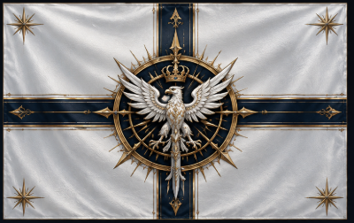

ДОСЬЕ № АИЯ-ИБН-M-001
I. ОБЩИЕ СВЕДЕНИЯ
Имя
Аурелия Эвергрейс Ноктириэль
Вид
Человек
Возраст
36 лет по GLS
Должность
Императрица Империи Белой Ночи
Род деятельности
Государственное управление, руководство Имперскими Домами, надзор за магическими исследованиями, стратегическое планирование
Уровень допуска
Обладает абсолютным доступом ко всем государственным, военным и магическим структурам Империи Белой Ночи.
Принадлежность

Империя Белой Ночи
Титулы
- Её Императорское Величество
- Хранительница Белого Пламени
- Верховная Покровительница Академий
- Повелительница Великой Ночи
- Первая среди Великих Домов
II. ВНЕШНИЙ ВИД
Волосы
Длинные серебристо-белые волосы, достигающие поясницы; обычно собраны в сложную дворцовую причёску с использованием арканных украшений.
Глаза
Золотисто-янтарные, с лёгким магическим свечением; взгляд спокойный и внимательный, способен вызывать ощущение давления даже без применения магии.
Телосложение
Стройное, изящное; движения плавные и уверенные.
Одежда
Бело-серебряное императорское одеяние с элементами парадного военного мундира и традиционного дворянского костюма.
Накидка из белой ткани с серебряной вышивкой.
Императорская корона Белой Ночи, украшенная магическими кристаллами.
На груди располагается Имперская Печать — древний артефакт, символизирующий право на престол.
Накидка из белой ткани с серебряной вышивкой.
Императорская корона Белой Ночи, украшенная магическими кристаллами.
На груди располагается Имперская Печать — древний артефакт, символизирующий право на престол.
Выражение лица
Спокойное и сдержанное; крайне редко демонстрирует сильные эмоции на публике.
III. ЛИЧНОСТНЫЙ ПРОФИЛЬ
- Рассудительная
- Дисциплинированная
- Терпеливая
- Харизматичная
- Верна традициям
- Умеет слушать собеседника
- Обладает высоким уровнем самоконтроля
- Склонна скрывать личные переживания
- Недоверчива к быстрым переменам
- Проявляет жёсткость в вопросах безопасности Империи
- Высоко ценит долг и ответственность
- Редко прощает предательство
Несмотря на статус абсолютного монарха, известна как правительница, предпочитающая убеждение принуждению. Среди населения обладает высокой популярностью.
IV. КОМПЕТЕНЦИИ
- Высшая магия: признанный мастер арканных искусств.
- Пространственная магия: экспертный уровень.
- Политика: обладает выдающимися навыками управления сложной системой дворянских Домов.
- Дипломатия: высокий уровень подготовки.
- Стратегическое мышление: способна координировать действия флотов и армий в масштабах нескольких миров.
- История и право Империи: эксперт.
- Артефакторика: продвинутый уровень.